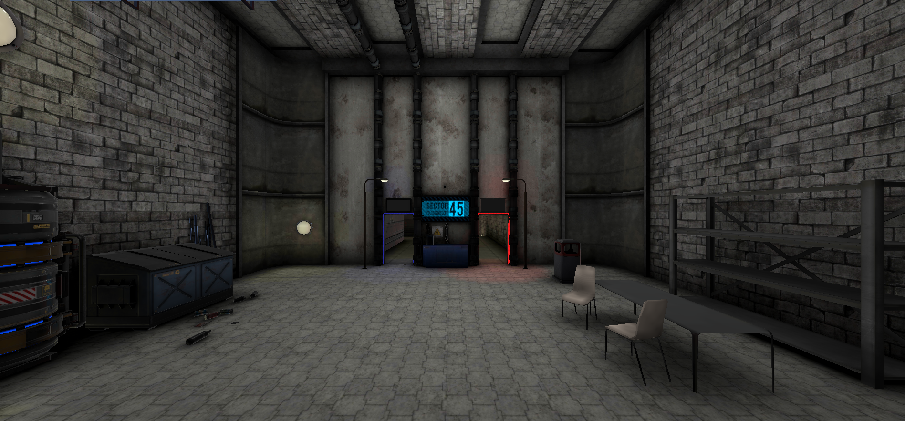

With this project, I was paid to build a block matching game with the following features within a week for the android platform:
-Random pool of blocks to pulls from the bottom onto the board
-Detection for when there was no more avaliable moves
-Horizontal and vertical line clears
-Point system
-Board resetting
-Settings
Ten Flight Studio
Within Ten Flight Studios, I worked on a project titled "Immersion Sector" (formally "DeadZone"), within this project I worked as a Unity Generalist, working on level design, optimisations for models, modelling props, and setting up prefabs and physics props.
This project was in VR and targeted towards the mobile and PC platform, meaning that I had to make large optimisation passes to ensure the levels ran at a smooth 120hz on the Meta Quest 2 and 72hz on the Meta Quest 1 at the time.

Bronze Lantern
I have worked with a french-based studio named "Bronze Lantern Studio" as the lead programmer. I cannot disclose the projects but I can confirm I have worked on several core features, such as player movement, AI state-machines, weapons, UI, and much more.